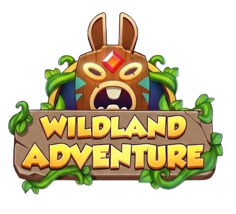
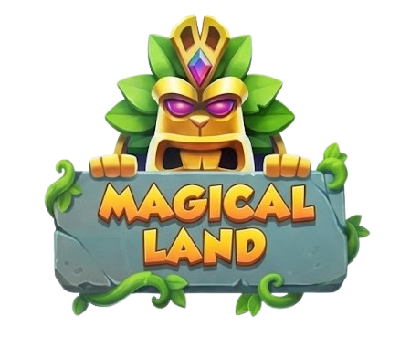
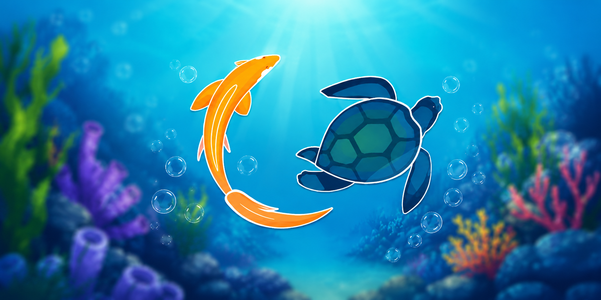
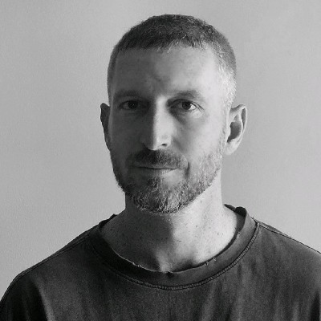
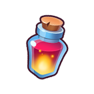
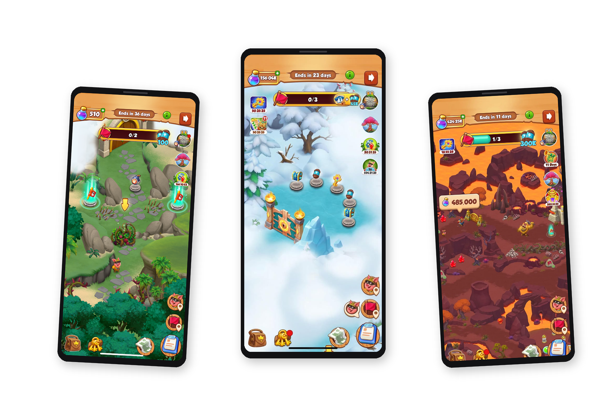

Before
- Stable start
- Mid-Stage bottleneck
- Sustained friction
- Exhausted finish
Product Manager, mobile gaming, progression, and complex systems.
I work across product thinking, UX, game systems, and cross-functional delivery, turning user, business, Economy, and technical constraints into experiences that can be built, tested, and evolved in live games.

Designing live progression within Product and Economy constraints.

From a production-tested non-linear MVP to an evolving product experience.

Translating cognitive research and accessibility needs into an adaptive B2C game.

I'm curious about how people think, what makes products feel intuitive, and how good ideas become real experiences. I enjoy working with different teams, making sense of complexity, and turning it into solutions that are clear, useful, and practical.
Get in touchDesigned live progression features within Coin Master, translating Product and Business direction into playable configurations and production-ready experiences. Shaped progression pacing and content requirements. Defined PRDs, use cases, and acceptance criteria for internal tools. Collaborated across Product, Economy, Dev, Art, Tech Art, QA, Ops, Monetization, and Platform.
Translated cognitive research, product goals, and the needs of older users into accessible game mechanics, UX flows, and adaptive training experiences. Designed player-facing flows, interaction patterns, feedback systems, and UI layouts from concept through production. Managed design interns and improved sprint workflow practices.
Created environments, UI elements, icons, characters, and production assets for casual mobile games, including Muuula Games. Developed strong understanding of mobile-first visual clarity, asset production, and player-facing communication.
Planned and delivered social programs and exhibitions, coordinating stakeholders, schedules, budgets, dependencies, and end-to-end execution.
Designed web-product flows, wireframes, and high-fidelity interfaces in an early-stage startup environment.
CASE STUDY · COIN MASTER · MOON ACTIVE
Product Level DesignerDiscovery · Progression · Pacing · Content · Level Builder
Wildland Adventure is an exploration and progression feature inside Coin Master. Players spend Potions to clear obstacles, earn Flags that fill a Stage bar, collect the reward, and move along the map to the next Stage.
I was the first Product Level Designer dedicated to the feature. I designed the high-level Stage layouts, turned Product and Economy direction into playable progression, and coordinated content production, implementation, testing, and iteration.

Coin Master players know the spin-driven core loop. Wildland asked them to play a different one: a spatial, map-based exploration built on spending resources, clearing obstacles, progressing, and completing Stages.
The new loop had to be understood at a glance inside a mature live game, and to support the wider product rather than compete with it for players' attention, time, or resources. At the same time, obstacle costs, resource distribution, rewards, player momentum, and a continuous LiveOps production schedule all had to stay in balance. Layout, Economy, pacing, and production constraints worked as one connected system.
Product and Economy gave me a direction. I turned it into Chapters players could play: layouts, pacing, content needs, and the checks that made them ready to ship.
Moment-to-moment actions accumulated into Stage progression, while completed Stages moved the player through the Chapter.
Moment-to-moment action: every spend has a visible result.
Stage progression: gives meaning to each individual action.
Long-term arc: creates a sense of journey beyond individual sessions.
The three layers connect immediate action, intermediate reward, and longer-term completion.
The feature connects three nested loops, each building on the previous to create meaning across different timescales.
The road stayed structurally linear to preserve progression and Economy control, while spatial composition created anticipation and discovery.
One measurable road
Spatial Composition
Curvature · landmarks · occlusion
Anticipation without true branching
Working with Economy, I iterated on obstacle costs, density, and reward cadence within the agreed cost envelope.
Illustrative pacing: a qualitative view of the iteration, not measured player data.
The goal was not to remove complexity, but to distribute it more intentionally across the Stage. An uneven progression curve created a mid-Stage bottleneck that carried into end-Stage exhaustion.
Illustrative example of a Stage's composition. S, M, L, XL are obstacle sizes: the larger the obstacle, the more rewarding the payoff that follows. A full Chapter contains many more obstacles.
Stable start · Dense mid-Stage · Sustained friction · Exhausted finish
2S / 6M / 8L / 4 Rewards: high cost density, long uninterrupted segments.
Stable start · Gradual complexity · Pacing break · Denser challenge · Controlled finish
2S / 7M / 7L / 5 Rewards: redistributed cost, clearer beats, added relief point.
| Opening Beat | S · S · M | Reward → low friction entry |
|---|---|---|
| Rising Action | M · M · L | Reward → gradual escalation |
| Relief Beat | M · L | Reward → deliberate pacing break before peak |
| Escalation | M · L · M · L · L | Reward → highest density |
| Climactic Finish | M · L · L | Reward → Stage Complete |
Swipe or tap 1, 2, 3
Iteration informs the next production cycle.
Subsequent tests showed improved progression pacing and Stage completion, though the effect could not be attributed to layout changes alone.
Wildland strengthened my understanding that progression design is not a sequence of isolated Stages, but a connected product system.
Each layout decision could affect several dimensions at once:
A Stage could work locally while still creating problems across the wider journey.
This pushed me to evaluate content at multiple levels:
It also changed how I approach product work more broadly. I became more deliberate about identifying dependencies early, separating local optimization from system-level impact, and designing systems that remain understandable, scalable, and buildable across teams.
CASE STUDY · COIN MASTER · MOON ACTIVE
Product Level DesignerDiscovery · Non-Linear MVP · Road design · Level Builder · Production
Magicaland Adventure grew out of a production-tested MVP. The MVP asked how Coin Master's Expedition model could move beyond a mostly linear progression structure. Expedition is a feature inside Coin Master. Players explore a map, clear obstacles along a road, uncover new areas, and earn rewards that fuel the core game. Based on Product, Business, and Economy requirements, it introduced a controlled Main Road with optional Side Roads, making room for bonus progression, risk–reward decisions, and deeper product capabilities later.
I translated Product, Business, and Economy direction into a gameplay experience testable in production.
Contributed to concept development, gameplay alternatives, and strategic direction.
Designed Main Road and optional Side Road layouts.
Translated Economy requirements, models, and simulation outputs into playable configurations, iterating on resource distribution, progression parameters, and road structure.
Created mockups, Chapter Dressing, and visual alternatives; planned existing, new, unique, and temporary MVP assets.
Coordinated content needs across Art, Animation, Tech Art, and Development.
Defined Level Builder requirements for the non-linear structure and supported configuration export & integration.
Clarified critical gameplay and configuration scenarios for QA and Operations, and participated in shared triage.

The MVP did not remain an isolated experiment. It became a direct product foundation, expanded across later versions with additional systems, features, and content.
The existing Expedition model relied on a primarily linear progression structure. This made progression easy to understand and control, but limited optional depth, player agency, and the number of product levers available within the experience.
The opportunity was to explore whether a controlled non-linear structure could introduce meaningful Side Roads, bonus progression, and risk–reward decisions while preserving a clear Main Road, without investing prematurely in a dedicated Economy, Monetization layer, and new Chapter structures before the direction had been validated with real players.
The challenge: build enough of the future experience to test it credibly in production, while keeping the MVP constrained, feasible, and compatible with existing systems.
Primary Journey Main Road
Optional Goals Bonus Road · Activity · Achievement · Bar
Player allocates Potion investment across visible goals.
The MVP shifted the experience from a single progression bar to a map-based system of parallel progression layers, each with its own player value, cost, and reward logic.
The MVP introduced a clear Main Road alongside optional Bonus Roads. The Main Road preserved the primary journey and Stage completion path, while Bonus Roads created additional decisions around cost, reward, timing, and opportunity cost.
The MVP introduced multiple progression layers that could advance in parallel rather than through a single bar. Each layer represented a different player goal, cost, dependency, or reward. The challenge was creating meaningful choice without losing clarity about the primary journey.
These decisions operated within a broader core–event Economy loop. Players evaluated not only what an action unlocked inside the Expedition, but also what value the event returned to the core game, and which core resources were worth investing back into the event.
The MVP was the smallest credible version that could produce meaningful player behavior in production: enough depth to test real behavior, but not so much that the team became locked into an unvalidated Economy or content model.
Turning an early concept into a playable experience required reducing a broad and still-evolving direction into a smaller set of connected systems that could be built, tested, and refined incrementally.
I worked across Product, Economy, Art, Development, and internal-tool stakeholders to define the initial progression structure, clarify the relationships between event actions and core-game value, and specify the supporting features needed to make the experience understandable and operationally manageable.
The economy was not a fixed system handed over for implementation. I worked alongside Product and Economy as assumptions around resource costs, rewards, progression, and player choice were translated into playable flows. Building the experience made it possible to evaluate those assumptions in context, identify friction or unclear value, and refine the system together.
Rather than documenting every part of the experience at the same level of detail, I focused specifications on the highest-friction areas: decisions that affected player understanding, progression, implementation, operational needs, or future scalability. I also wrote PRDs for supporting features and internal tools where clearer functional requirements were needed.
The migration from a linear to a non-linear model was designed as a gradual strategic process rather than a complete redesign. The initial goal was to recreate maps that remained as close as possible to the proven linear experience while running on the new non-linear infrastructure. This reduced the number of variables changing at once and created a clearer baseline for understanding player behavior.
I helped translate this strategy into player-facing layouts and flows, coordinating requirements and dependencies across stakeholders and supporting the product and business rationale behind the transition. Additional assumptions were introduced progressively, based on tests conducted by the Strategy team: preserve what was working, expose selected new capabilities, evaluate the results, and expand or revise based on evidence.
Following the MVP, Magicaland continued to evolve through strategic pivots, new player-facing features, and an expanding set of internal tools and production capabilities. My scope grew with the product. I owned specific features, flows, layouts, requirements, and internal-tool processes, taking them from early exploration and stakeholder alignment through implementation and iteration.
As different areas of the product became more interconnected, the work required close coordination with adjacent owners and cross-functional stakeholders. The challenge was not only to deliver individual features, but to evolve them within a growing system without creating contradictions across progression, infrastructure, operational needs, or player value.
Magicaland changed how I think about product development in evolving systems. The first challenge was not to define the complete future state, but to identify a version that was coherent enough to build, test, and learn from, separating what had to be resolved for the MVP from decisions that could remain flexible until stronger evidence emerged.
As the product evolved, strategy, Economy, player experience, infrastructure, and operational tools continuously shaped one another. A change in one area rarely remained local. It could affect progression, player choice, production workflows, technical requirements, and the value exchanged between the event and the core game.
The migration from a linear to a non-linear model reinforced the value of controlled change. This showed me that transformation does not always require changing the player experience and the underlying system at the same time. Preserving familiarity can be a deliberate product strategy that enables clearer learning and lowers implementation and adoption risk.
The main lesson I carried forward: product clarity does not come from defining everything upfront. It comes from structuring change in a way that generates useful evidence, reduces avoidable risk, and allows each iteration to improve both the player experience and the system behind it.
.jpg)
.jpg)